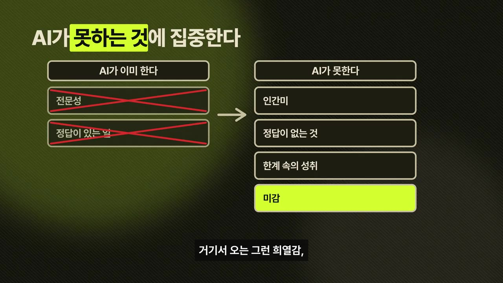
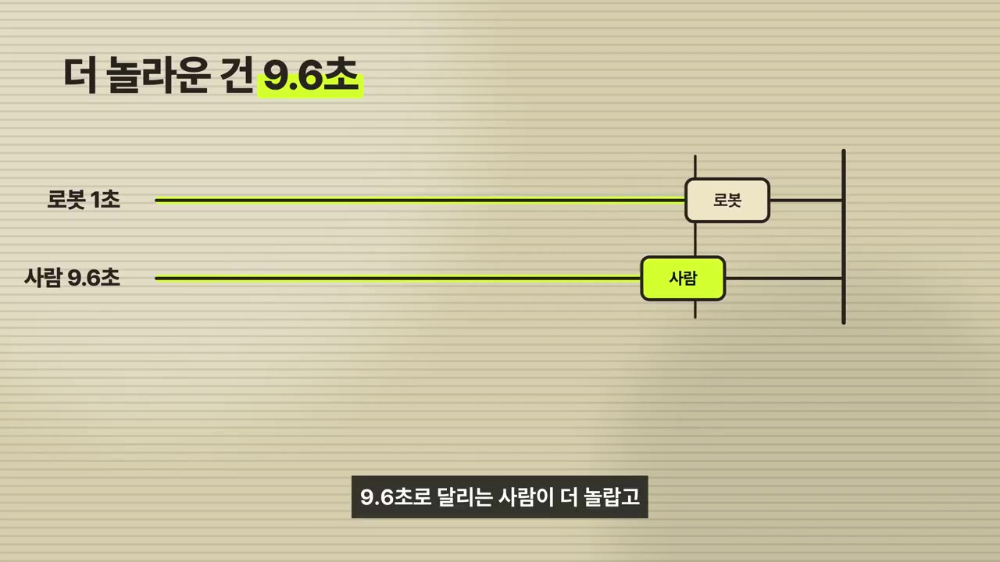
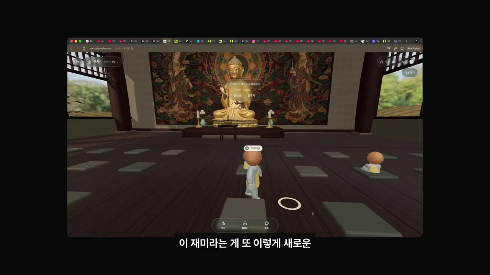
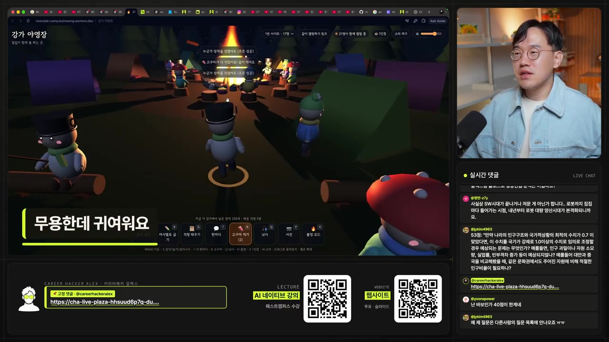
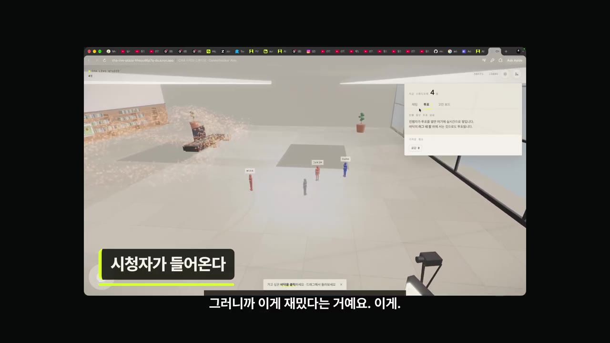

전문성은 이미 대체되고 있습니다. 키워야 할 것은 인간미와 미감입니다
▶ 원본 영상 보기한눈에 보기
- AI가 완벽해질수록 사람의 한계·부족함·인간미가 오히려 희소해져 더 끌리게 된다는 것이 영상의 핵심 주장이다.
- 바이브 코딩으로 만든 온라인 절, 불멍 같은 "쓸데없지만 귀여운" 커뮤니티 게임이 뜨는 현상이 그 사례다.
- 영상 제작자는 직접 3D 커뮤니티를 라이브로 만들어 시청자와 놀며, 만드는 일 자체는 쉬워졌음을 보여 준다.
- 미감(취향·감성)은 프롬프트만으로 따라 하기 어렵고, 골라내는 안목이 새로운 실력이 되고 있다.
- 전문성은 AI가 이미 대체하고 있으므로, 인간미·철학·정답 없는 영역처럼 AI가 못 하는 것에 집중하라는 결론이다.
이런 분께 도움이 됩니다
- AI 시대에 어떤 역량을 키워야 할지 고민하는 직장인·크리에이터.
- 콘텐츠·제품 기획에서 "왜 쓸데없는 것이 뜨는가"의 힌트를 얻고 싶은 분.
핵심 내용
결론: 키워야 할 것은 인간미와 미감
- AI가 전문성을 대체하는 것은 시간 문제가 아니라 이미 벌어진 일이라고 주장한다. (12:09)
- 전문성을 보강하는 것도 중요하지만, AI가 못 하는 것에 포커스를 두는 쪽이 더 중요하다는 입장이다.
- 영상이 꼽는 AI가 못 하는 것: 인간미, 철학적인 것, 정답이 없는 것, 사람을 이해해야 깨닫는 것, 무용함의 아름다움, 한계 안에서 치열하게 해냈을 때의 성취·동질감, 미감. (12:42)
- 개성을 드러내고, 욕을 먹더라도 내 생각을 말하는 연습이 인간미를 키우는 방법이다. 화자도 라이브 때마다 떨리지만 계속해야 능력치가 오른다고 말한다. (2:05)
💡 AI가 잘하는 곳에서 경쟁하지 말고, AI가 못 하는 곳을 부각하라.

근거: 한계가 있어서 가치가 생긴다
- 완벽한 것보다 부족한 것이 더 끌릴 수 있다. 가치 정의가 희귀성 기준으로 바뀌는 것이다. (0:00)
- 예시: 100m를 1초에 달리는 로봇이 나와도 놀랍지 않고, 여전히 9초대로 달리는 사람이 더 경이롭다. (0:28)

- 예시: 스타크래프트 치트키를 다 쓰면 재미없고, 못 치니까 재미있다. "한계 안에 아름다움이 있다"는 생각이다. (1:04)
- 능력이 같은 두 사람이라면, 유튜브 등으로 사람들과 친해지고 호감을 얻은 쪽이 앞으로 더 귀해질 수 있다.
- 호감을 사는 능력과 소통 능력이 프로그램을 더 짜는 능력보다 중요해질 수 있다는 가설이다.
사례 1: 쓸데없는데 뜨는 바이브 코딩 커뮤니티
- 바이브 코딩으로 만든 온라인 절·성당·교회(예: 산사 온라인 절, 사그라다 파밀리아)가 크게 뜨고 있다. 접속자가 100명에 달하기도 했다. (2:40)

- 비개발자도 만들 수 있을 만큼 제작이 쉬워졌다.
- 불멍, 앉기, 마시멜로 굽기, 걱정 태우기처럼 무용하지만 귀여운 요소가 있다. (4:47)

- 화자의 해석: 사람들이 완벽함 대신 일탈·재미·귀여움·무용함·정(情) 같은 인간미를 찾는다. 이런 게 늘어난다. (5:14)
- 시기도 중요하다고 본다. AI·생산성·"월천" 같은 세속적 콘텐츠가 넘치는 노이즈 속에서, 모자라지만 귀여운 것이 쉼터처럼 먹힌다.
- 왜 하필 이것이 뜨는지는 화자도 "감"이라 하며 정확히 모른다고 인정한다.
💡 누구나 만들 수 있게 되자, 차이는 "무엇을 만들까"라는 창의성에서 난다.
사례 2: 화자가 라이브로 직접 만든 3D 커뮤니티
- AI에게 "사람들과 대화하며 쓸데없이 시간 보내고 싶다"는 식으로 요청해 3D 커뮤니티를 만들었다. 제작은 매우 쉬웠다고 한다. (5:50)
- 라이브 중 추가 요청한 기능: (7:22)
- 엔터로 채팅
- 사람을 누르면 그 사람 얼굴로 줌
- 투표를 올리면 머리 위에 투표창이 뜨고, 다른 사람이 투표
- 검수 과정 없이 바로 배포(디플로이)
- 곧바로 시청자 5명 이상이 들어와 투표까지 작동했다. 능력·재미·가치의 정의가 다시 쓰이고 있다고 해석한다.

미감도 실력이다
- 크리에이터 "포지 24"는 해리포터를 재해석한 AI 영상으로 AI 영상 트렌드에 큰 변화를 일으켰다고 평가한다. (8:00)
- 화자가 비슷하게 따라 해 봤지만 잘 안 됐다. 프롬프트만의 문제가 아니라, 느낌을 살리고 결과물을 골라내는 안목이 어렵다는 것이다. (9:02)
- 게임은 예쁘지 않아도 재밌으면 되고, 영상은 할리우드가 끝났나 싶을 정도다. 색감·연출 같은 새로운 영역이 계속 열리며 "실력"의 범위가 넓어지고 있다. (9:29)
사례 3: 썸네일 자동화
- 썸네일은 정답이 없는 "무한 굴레"이고, 화자는 약 1천만 원을 썼다고 한다. (10:05)
- 정답은 결국 영상을 클릭하는 시청자의 취향·메시지·감정에 있다.
- 이를 데이터로 분석해 미감과 엮는 방식으로 자동화를 개선해 왔다.
- 개선 과정: 이상한 결과물 → 업그레이드 → 구도 변경 → 브랜드 컬러 → 시선 집중 연출 → 에이전트 도입·통합 → 점점 나아짐. (11:06)
- 그래도 AI는 아직 썸네일을 완벽하게 만들지 못한다. 자신의 경험·노하우·미감으로 방향을 잡아 주는 사람이 AI 인재라고 말한다. (11:36)
기억할 숫자·인용
- 100m 9초대 사람 vs 1초에 달리는 로봇: 사람이 더 경이롭다는 비유.
- 썸네일 제작·자동화에 쓴 돈: 약 1천만 원 (화자 발언).
- 라이브 중 시청자 5명 이상이 바로 입장.
- "AI가 전문성을 대체하는 건 시간 문제가 아니라 이미 일어난 일."
생각해볼 점
- (내 의견) "부족함이 매력"이라는 주장은 일부 사례(온라인 절 등)에서 끌어낸 것으로, 유행이 오래갈지는 영상에서 검증되지 않았다.
- (내 의견) 인간미·미감을 키우는 구체적 방법은 거의 제시되지 않고, "계속 해 보라" 수준이다.
- 화자는 자신의 AI 썸네일 사업을 홍보하는 입장이므로, 미감이 중요하다는 주장에 이해관계가 있을 수 있다.
바로 해볼 일
- 내 업무 중 AI가 이미 잘하는 것과 못하는 것을 각각 3개씩 적어 보기
- 완벽하지 않아도 되는 작은 결과물(글·영상·사이트)을 하나 만들어 공유해 보기
- 내가 좋아하는 이미지·콘텐츠의 공통된 느낌을 한 줄로 말로 정리해 보기